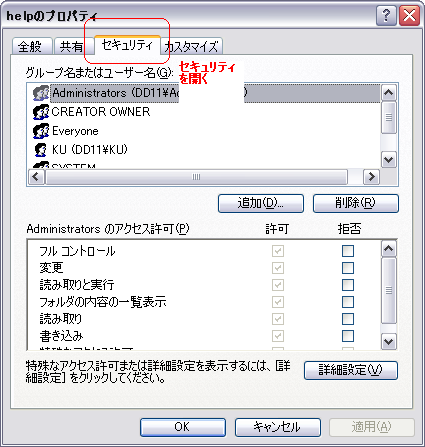
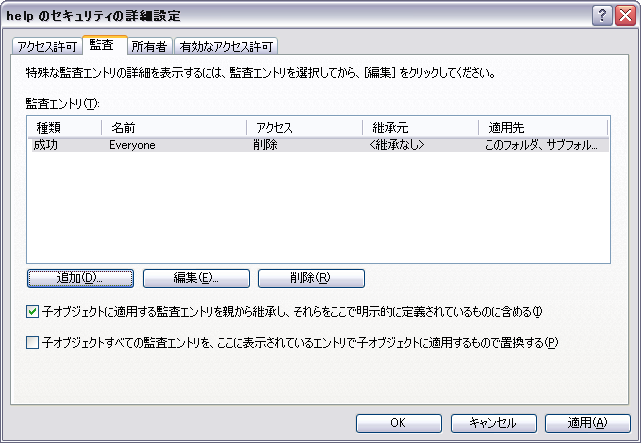
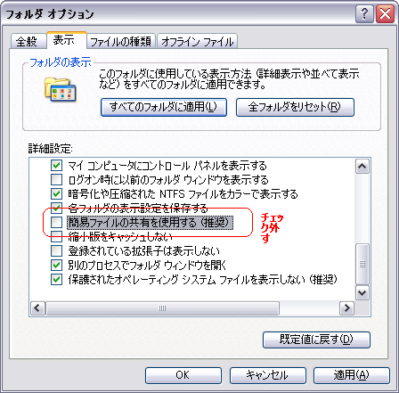

ファイル・フォルダを監査対象にする方法
概要：
- 削除等のファイル操作を追跡するためにファイル・フォルダを監査対象にする方法を、ご案内致します。
対象環境：
- Microsoft Windows 2000又はWindows XP Pro
- Windowsの管理者権限・Administrators権限が必要です
- NTFSのパーティション・ドライブ
手順：
- ファイル又はフォルダのプロパティを表示します。
-
「セキュリティ」タブを表示します。「セキュリティ」が表示されない場合は、こちらを参照します。

- 「詳細設定」ボタンをクリック、
- 上部の「監査」タブをクリック、
- 「追加」ボタンをクリックします。「ユーザー、コンピュータ または グループ の 選択」画面が出て参ります。
-
「選択するオブジェクト名を入力してください」欄に、アカウント名等を入力します。
判らない場合は、「Everyone」を使って乗り切ります。
- 進みますと、「xxx の監査エントリ」画面が出て参ります。
- 「削除」行の「成功」列にチェックを入れます。
-
「OK」

- 「OK」
「セキュリティ」タブを表示する手順：
- 「マイコンピュータ」開く。
-
上部の「ツール」メニュー
→「フォルダ オプション」開く。「フォルダ オプション」画面が出て参ります。
- 上部の「表示」タブを開く、
- 下部の「詳細設定」から、「簡易ファイルの共有を使用する （推奨）」チェック外す。
- 「OK」
